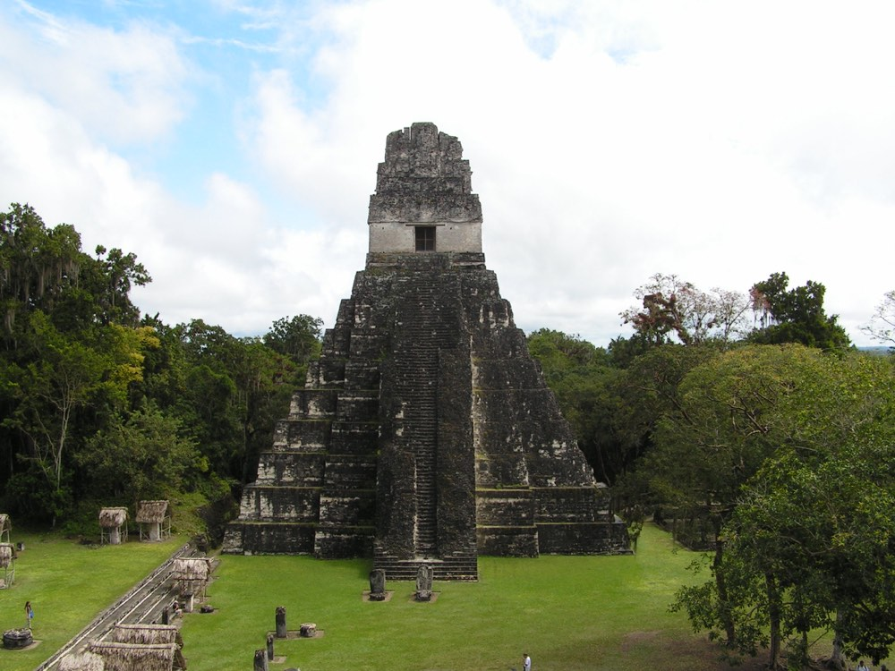
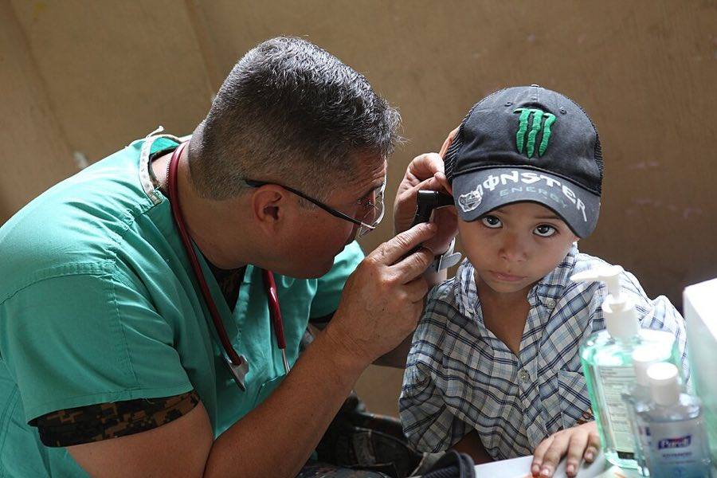
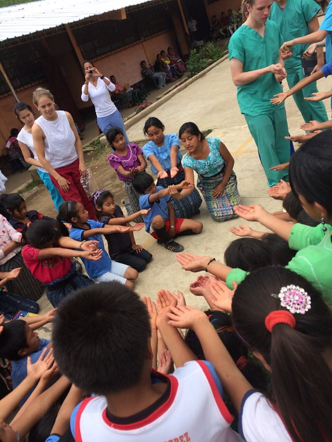
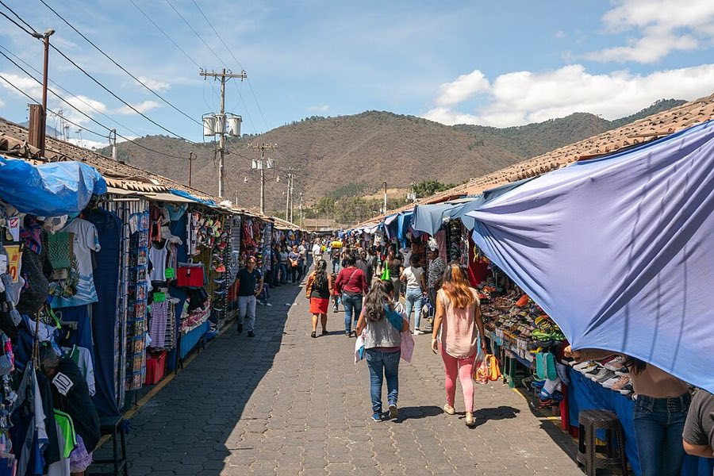
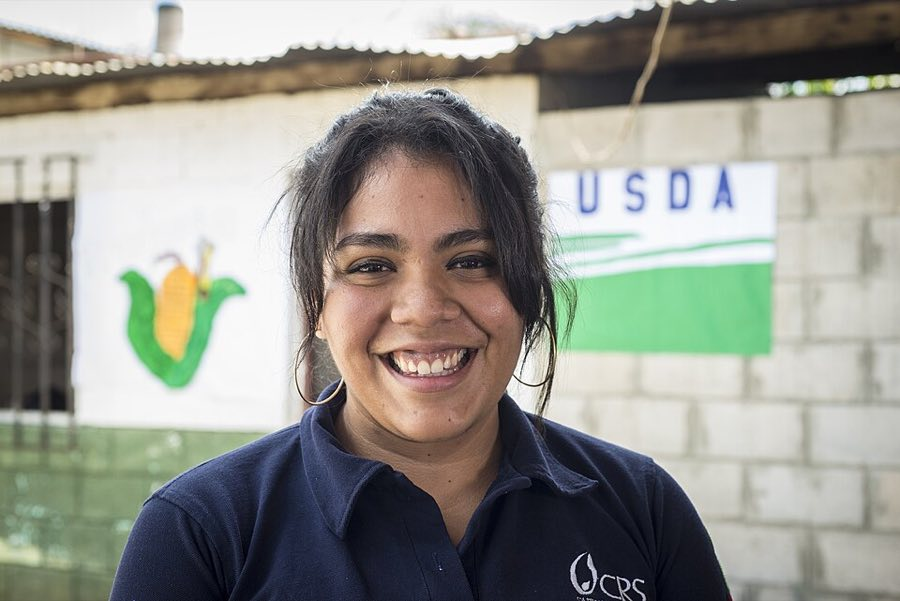
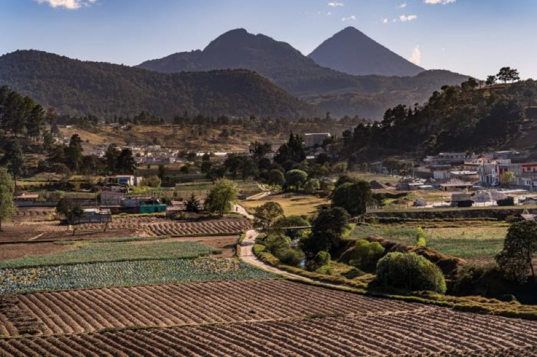
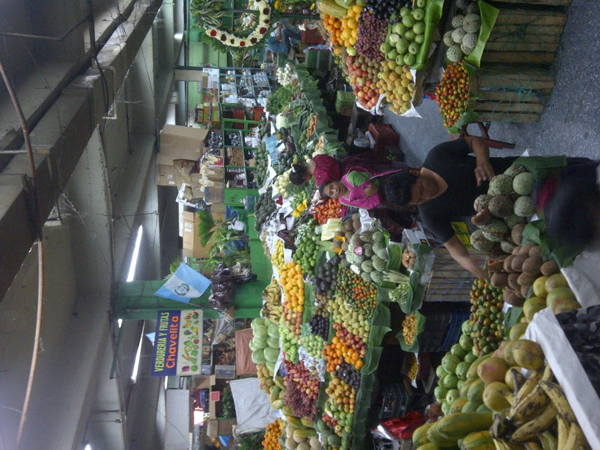

Índice de Desarrollo Humano
Desarrollo humano medio
CAPÍTULO 01 / TIKAL · SEMANA 01
Introducción al desarrollo humano
¿Qué hace falta para estudiar, cuidar nuestra salud y vivir con dignidad? Miremos las oportunidades detrás de las cifras.

Introducción al desarrollo humano
01 / INTRODUCCIÓN
Poder estudiar. Recibir atención a tiempo. Elegir un trabajo que permita vivir.
DESARROLLO HUMANO · GUATEMALAAl graduarnos o buscar trabajo, solemos escuchar que el futuro está en nuestras manos. Sin embargo, nuestras decisiones dependen del lugar donde vivimos y de los recursos disponibles. Estudiar en la universidad exige poder pagar la carrera, llegar con seguridad y contar con tiempo para aprender. ¿Qué posibilidades reales tenemos de construir la vida que queremos? Hablar de desarrollo humano empieza por mirar esas posibilidades.
Para el Programa de las Naciones Unidas para el Desarrollo (PNUD), el progreso debe ampliar las capacidades y las opciones de las personas. Una economía que crece puede ayudar, pero también importa cómo ese crecimiento se convierte en salud, aprendizaje y recursos para vivir con dignidad. El desarrollo humano incluye poder participar, tomar decisiones y encontrar caminos que no estén cerrados de antemano. (PNUD, s. f.)
El Índice de Desarrollo Humano, o IDH, ofrece una forma de acercarnos a esa realidad. Resume los logros promedio de un país en salud, educación y nivel de vida en una escala entre cero y uno. Un valor más alto indica mayores logros en esas dimensiones. Sin embargo, el índice no cuenta toda la historia: no describe la situación de cada familia ni recoge por sí solo las desigualdades, la seguridad o la libertad de participar. (PNUD, s. f.)
En Guatemala, mirar el territorio ayuda a entender por qué un promedio nacional resulta insuficiente. La lectura base de este capítulo examina cómo las oportunidades cambian entre lugares y grupos de población. Una escuela cercana, una consulta médica o el acceso a tecnología pueden facilitar decisiones que en otro entorno son mucho más difíciles. Las diferencias necesitan explicaciones y respuestas concretas. (PNUD, 2022)
En este capítulo recorremos las tres dimensiones, comparamos a Guatemala con México, Honduras y Bolivia, y revisamos diez años de datos. Las cifras nos sirven para hacer preguntas: ¿qué ha mejorado?, ¿quiénes encuentran más obstáculos?, ¿qué cambiaríamos en nuestra comunidad? Al avanzar, relaciona lo que ves con tu vida cotidiana y con las historias que compartimos. Queremos entender qué condiciones hacen posible elegir y salir adelante.

Caminar entre los puestos, comprar la comida, regresar a casa. Esta foto de La Democracia, tomada en 2007, nos acerca a una pregunta: ¿qué necesita una familia para vivir con tranquilidad?
Mike Baird (2007). CC BY 2.0. Fuente de la fotografía ↗.
GUATEMALA EN CIFRAS
Desarrollo humano medio
Entre 193 países
Una vida larga y saludable
Acceso al conocimiento
10.7 años esperados de escolaridad
12,459 dólares internacionales de ingreso nacional bruto por persona (PPA de 2021)
Fuente: (PNUD, 2025a). PPA significa paridad de poder adquisitivo: ajusta las diferencias de precios entre países. El ingreso por persona se expresa en dólares internacionales de 2021; no equivale a un salario ni al ingreso disponible de cada hogar.
02 / COMPONENTES DEL IDH
Tres dimensiones que se cruzan todos los días: al ir a clases, buscar atención médica o hacer las compras de la casa.
El Índice de Desarrollo Humano (IDH) resume los logros promedio de un país en tres dimensiones. Su valor va de 0 a 1; cuanto mayor es, mayores son esos logros. (PNUD, 2025b)

Que cuidarnos no sea un lujo.
Esperanza de vida al nacer.
Un médico revisa el oído de un niño en Zacapa, durante una jornada de atención de 2014. Una escena sencilla que nos recuerda lo importante que es poder pedir ayuda cuando la necesitamos.
Foto: Gary Silverman / U.S. Army, 2014. Dominio público en EE. UU.. Fuente ↗

Aprender hoy. Tener más opciones mañana.
Años promedio de estudio en personas de 25 años o más, y años esperados de escolaridad al entrar a la escuela.
Niñas, niños y personas adultas participan en una actividad de educación para la salud en una escuela rural de Guatemala, en 2015. Aprender a cuidarse también forma parte de lo que una escuela puede aportar.
Foto: Annkat22, 2015. CC BY-SA 4.0. Fuente ↗

Que alcance para lo necesario.
Ingreso nacional bruto por persona, ajustado por poder de compra.
Un pasillo del mercado de Antigua en 2020: puestos, mercadería y personas que van de un lado a otro. Detrás de las compras diarias están el trabajo y los gastos de muchos hogares.
Fotografías documentales seleccionadas para este capítulo. Imágenes reducidas; los encuadres de las tarjetas se ajustan a la pantalla. Abre cada foto para ver el original.
Tres dimensiones que se conectan.
Los indicadores se normalizan y combinan mediante una media geométrica, no una suma directa.
Categorías y metodología: (PNUD, 2025b).
03 / COMPARACIÓN INTERNACIONAL
QUÉ NOS DICE LA TABLAEl puesto de un país no describe la vida de cada persona.Compara los promedios y pregunta cómo se distribuyen las oportunidades.
| País | IDH | Puesto / 193 | Categoría |
|---|---|---|---|
| México | 0.789 | 81 | Alto |
| Bolivia | 0.733 | 108 | Alto |
| Guatemala | 0.662 | 137 | Medio |
| Honduras | 0.645 | 139 | Medio |
Una misma fuente y año para los cuatro países. (PNUD, 2025a)
04 / DIEZ AÑOS DEL IDH
Figura 1 · Serie anual revisada del PNUD, edición 2025
Eje vertical ampliado: 0.62–0.68 para ver las variaciones. El IDH completo va de 0 a 1.
El índice cae en 2020 y 2021, y vuelve a subir en 2022 y 2023. El cambio entre el inicio y el final del período es de 0.012 puntos.
Fuente: serie completa 1990–2023 del PNUD. Se muestran los últimos diez años disponibles en esta edición, no diez años hasta la fecha actual. (PNUD, 2025a)
QUÉ NOS DICE EL GRÁFICOUn avance de 0.012 puntos en diez observaciones.La caída de 2020–2021 y la recuperación posterior recuerdan que el progreso puede interrumpirse. ¿Las oportunidades también mejoraron en nuestra comunidad?
LO QUE EL PROMEDIO NO MUESTRA
Un valor nacional reúne experiencias muy distintas. Para entenderlas hay que mirar los servicios disponibles, las distancias y las barreras que encuentra cada comunidad.
¿Cuánto tardarías en llegar a un centro de salud? ¿Podrías continuar estudiando si necesitaras trabajar? Compara tus respuestas con las de alguien de otra localidad.
UNICEF destaca la pertinencia cultural y lingüística de la educación: los idiomas y saberes de los pueblos Maya, Garífuna y Xinka forman parte del aprendizaje. (UNICEF, s. f.)
Para pensar: ¿qué cambia al aprender en tu idioma y ver tu cultura reconocida en clase?
La lectura base documenta brechas digitales entre territorios y hogares. Tener un teléfono, disponer de una computadora y contar con internet son condiciones distintas. (PNUD, 2022)
Para pensar: ¿podrías completar la misma tarea con datos móviles limitados o una computadora compartida?
05 / TESTIMONIOS
Compartimos estas entrevistas con autorización de las personas participantes y reservamos sus direcciones por privacidad. Sus experiencias nos acercan a distintas formas de vivir la educación, la salud y el trabajo.
Experiencia sobre las oportunidades educativas.
Experiencia sobre el acceso a servicios médicos.
Me parece que la falta de educación acerca de la salud contribuye bastante a que las personas no sepan cómo cuidar de su bienestar de manera adecuada. Muchas veces, la gente no tiene acceso a información clara y confiable sobre temas importantes como la alimentación, la actividad física, la salud mental y la prevención de enfermedades. Esto provoca que algunas personas desarrollen hábitos poco saludables sin darse cuenta de las consecuencias que pueden tener a largo plazo.
Además, considero que muchas veces se le da más importancia a tratar las enfermedades cuando ya aparecen que a enseñar cómo prevenirlas desde un principio. Por eso, pienso que es fundamental fomentar la educación sobre la salud desde una edad temprana, tanto en las escuelas como en los hogares, para que las personas puedan tomar decisiones más conscientes e informadas sobre su propio bienestar. Al final, tener conocimientos básicos sobre la salud no solo ayuda a prevenir enfermedades, sino que también permite mejorar la calidad de vida de las personas y de la sociedad en general.
Experiencia sobre el trabajo y los gastos del hogar.
06 / MIRAR GUATEMALA
Detente en los detalles: una escuela, un camino, un puesto de mercado. Son escenas distintas de la vida en Guatemala.

Una sonrisa frente al muro de la escuela de Parracantacaj, en 2016. La fotografía forma parte de un registro del apoyo a la educación y la alimentación escolar en esa comunidad.
Lance Cheung / USDA (2016). Dominio público. Fuente y crédito ↗.

Campos, casas y un camino que une distintos puntos de la comunidad, fotografiados en 2020. Al mirar el paisaje, vale la pena preguntarnos qué tan cerca quedan la escuela, el trabajo o un centro de salud.
Nicholas S. Tenorio / CDC (2020). Dominio público. Fuente y crédito ↗.

En este puesto del Mercado Central hay frutas y verduras por todos lados. La foto, de 2013, invita a pensar en algo cercano: el trabajo que hay detrás de los alimentos que llegan a nuestra mesa.
Luisfi (2013). Reducida, sin recorte del archivo. CC BY-SA 3.0. Fuente y crédito.
Las miniaturas se encuadran para la galería. Abre cada fotografía para consultar el original y su licencia.
07 / REFLEXIÓN GRUPAL
Compartimos nuestras respuestas a las preguntas del capítulo. Si quieres, también puedes escribir las tuyas. Tus notas no se envían y se borran al recargar o cerrar la página.
Para nosotros, desarrollarnos significa poder aprender, cuidar nuestra salud y elegir qué queremos hacer con nuestra vida. El dinero importa porque ayuda a cubrir lo necesario, pero también necesitamos una escuela a la que podamos llegar, atención cuando enfermamos y un trabajo que nos permita vivir bien.
Al mirar Guatemala, nos preocupa que esas oportunidades cambien mucho según el lugar donde vivimos y los recursos de cada familia. Nos gustaría un país donde nadie tenga que dejar sus metas por falta de apoyo o por hablar un idioma distinto.
Vemos las tres partes del IDH en cosas muy comunes: poder ir a clases, recibir atención cuando nos sentimos mal y tener dinero para la comida, el transporte o la vivienda. Una cifra no cuenta toda nuestra vida, pero sí nos ayuda a preguntar por qué esas posibilidades no son iguales para todos.
Nos hizo pensar en lo fácil que es dar por sentado lo que tenemos cerca. Una escuela o un centro de salud pueden estar a pocos minutos para una persona y muy lejos para otra. Queremos mirar los datos sin olvidar esas diferencias.
1. La educación. Nos preocupa que la distancia, el costo del transporte o la falta de materiales hagan más difícil seguir estudiando. Si aprender se vuelve un reto desde el inicio, también se reducen las opciones para el futuro.
2. La salud. Cuando un centro de salud queda lejos o no tiene lo necesario, recibir ayuda a tiempo se complica. Creemos que cuidar la salud debería ser posible en cualquier comunidad.
3. Los ingresos y el trabajo. Si el dinero apenas alcanza para lo básico, una familia tiene menos margen para estudiar, cuidar su salud o enfrentar una emergencia. Para nosotros, mejorar el IDH también significa abrir más oportunidades de trabajo digno.
Puedes guardar una copia en PDF desde la ventana de impresión.
08 / REFERENCIAS
Las cifras internacionales y la serie anual corresponden a la edición 2025 del PNUD, con datos hasta 2023. La lectura nacional fue publicada en 2022 y conserva su período de análisis.
Promovemos una comprensión crítica y ética de la realidad guatemalteca: información clara y verificable, accesibilidad, equidad y no discriminación, diversidad cultural, inclusión de distintas voces y respeto a la privacidad.
09 / CRÉDITOS VISUALES
Estas son las fuentes de las fotografías con autoría y licencia identificadas. Los lugares y fechas de esas imágenes aparecen en sus pies de foto.
Se utilizan versiones reducidas. Los encuadres se adaptan a las tarjetas; consulta cada original para ver la fotografía completa y su licencia.


.jpg){kind=link}